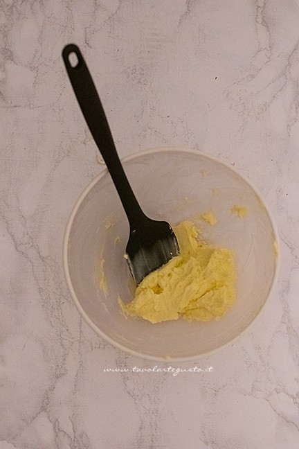
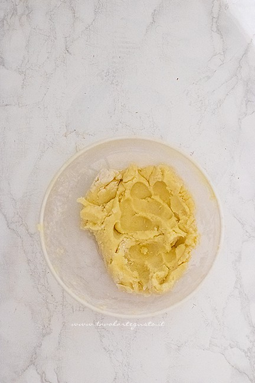
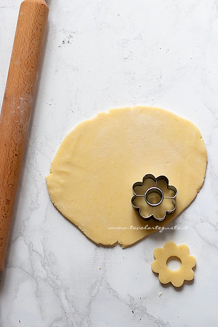
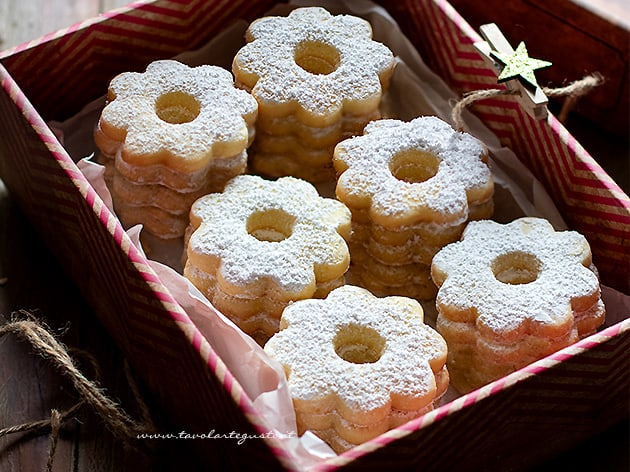

I canestrelli sono dolci popolari, le cui origini sono antichissime. Nel Canavese e nella Valle di Susa venivano preparati
sin dal Medioevo con il nome di nebule, probabilmente dalle gilde dei produttori di ostie.
Si offrivano in occasione di matrimoni, battesimi, feste religiose, carnevale.
I canestrelli di pasta frolla, probabilmente più recenti, appartengono alla tradizione Ligure e nella ricetta
attuale hanno una precisa collocazione sia témporale sia geografica: gli inizi dell’ottocento in Torriglia,
antica capitale appenninica dei feudi imperiali dei Doria Pamphilj (che si estendevano in Val Trebbia fino all'area oggi piacentina) che è tuttora il centro principale di produzione di questo dolce nella classica ricetta.
Ricetta
| Difficoltà | Facile |
| Tempo di preparazione | 10 Minuti |
| Tempo di cottura | 12 Minuti |
| Porzioni | 25 Pezzi |
| Metodo di cottura | Forno |
| Cucina | Italiana |
Ingredienti
Per l'impasto
- 100g di Farina
- 100g Fecola di patate
- 2 Tuorli sodi
- 130g Burro
- 60g Zucchero semolato
- Buccia di un limone
- Vaniglia (1 bustina oppure 1 cucchiaio di estratto)
- un pizzico di Sale
Per decorare
Preparazione dei Canestrelli
Impasto
Prima di tutto bollite le uova per ricavare i tuorli sodi, basteranno 5 – 7 minuti.
Nel frattempo montate il burro con lo zucchero, la vaniglia, il sale e la buccia grattugiata di limone per
2 minuti fino ad ottenere un composto spumoso e chiaro.
Sbucciate le uova, ricavate i tuorli sodi, fate intiepidire. Infine sbriciolate nel composto di burro .
Frullate i tuorli sodi con il composto di burro fino ad ottenere una crema gialla priva di grumi e perfettamente compatta.

Aggiungete infine fecola e farina. Compattate qualche secondo con le mani.

Sigillate l’impasto in una pellicola e lasciate raffreddare per almeno 1 – 2 h deve risultare freddo ma malleabile.
Stendete su un piano di lavoro leggermente infarinato allo spessore di 5 – 6 mm. la sfoglia dev’essere fredda e bella
dura, in modo da ricavare frollini dai bordi perfetti.
Ritagliate i vostri canestrelli con l’apposito stampino per canestrelli oppure con un taglia biscotti a forma di
fiore che poi dovrete successivamente forare al centro.
Man mano che li realizzate disponeteli in una teglia foderata di carta da forno alla distanza di almeno 5 cm.
Riponete in frigo la teglia per 15 minuti.

Cottura
Intanto azionate il forno a 180°. Cuocete in forno statico una teglia per volta nella parte centrale del forno per 10 – 11 minuti;
non devono dorarsi troppo.
Infine sfornate delicatamente. Inizialmente risulteranno leggermente morbidi e fragili. Una volta freddi si induriscono.
Decorazione
Fate raffreddare completamente e spolverate con abbondante zucchero a velo.

Conservazione
I canestrelli possono essere conservati fino a due settimane se ben chiusi in contenitori ermetici o riposti in una scatola di latta.